Personal projects
Client work keeps the lights on. Personal projects are where I sharpen the eye: action, culture, and the people who make it all happen. Nobody briefs these. I go out and make them because I love it.
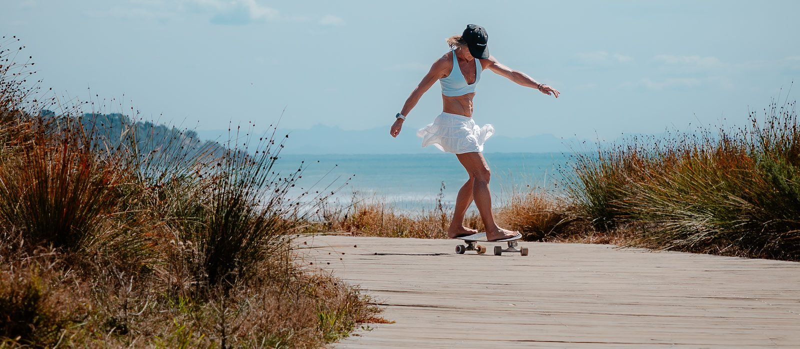
Skate at the Mount
In progress · 2026The brief I set myself: capture Mount Maunganui's skate scene the way the riders see it. Low angles, big air, and the crew cheering every landed trick (and every slam).
I'm shooting with the team riders from The Good Room. I also bought a board and started learning to skate myself. Strictly for research, obviously.
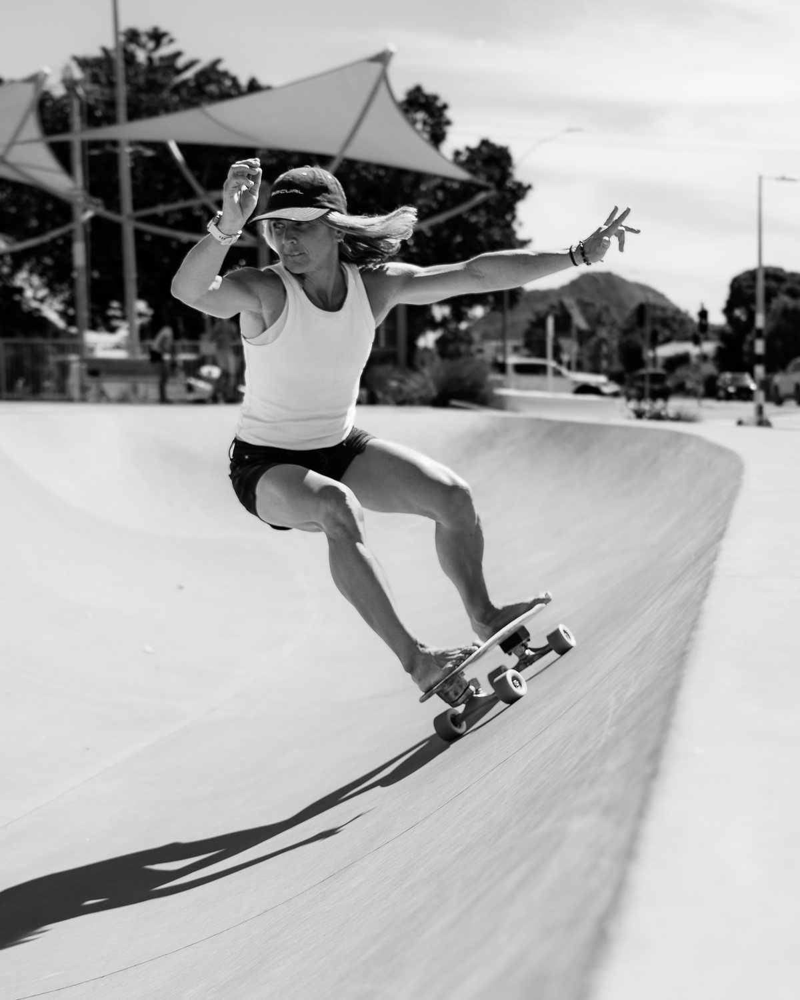
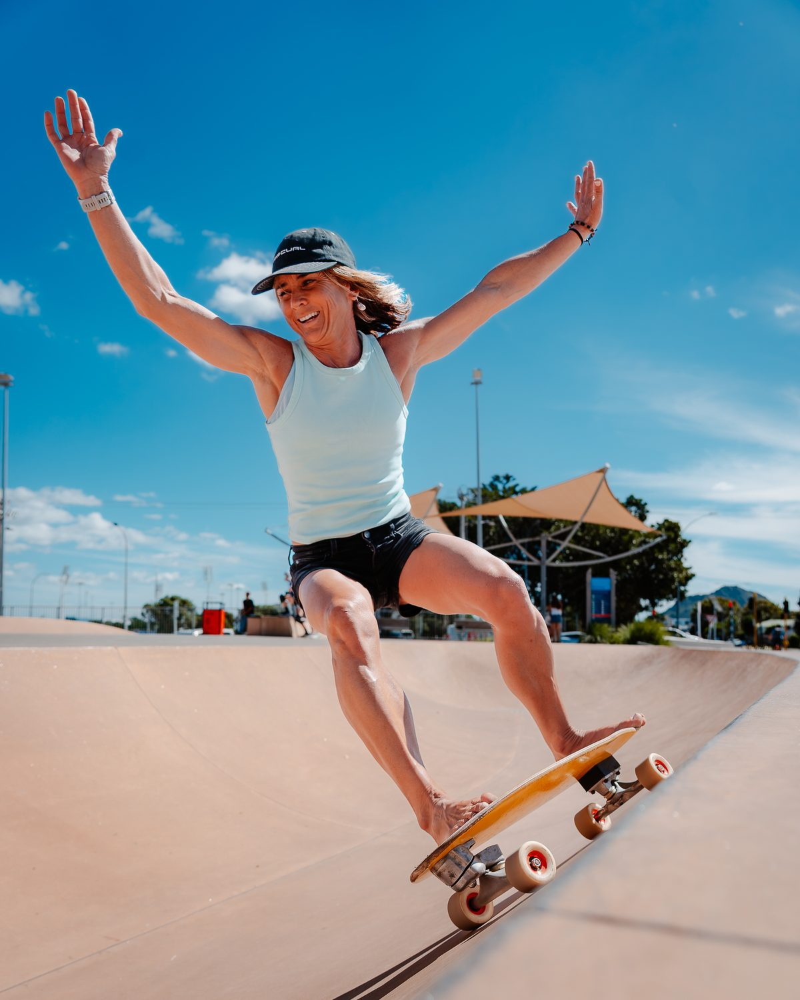
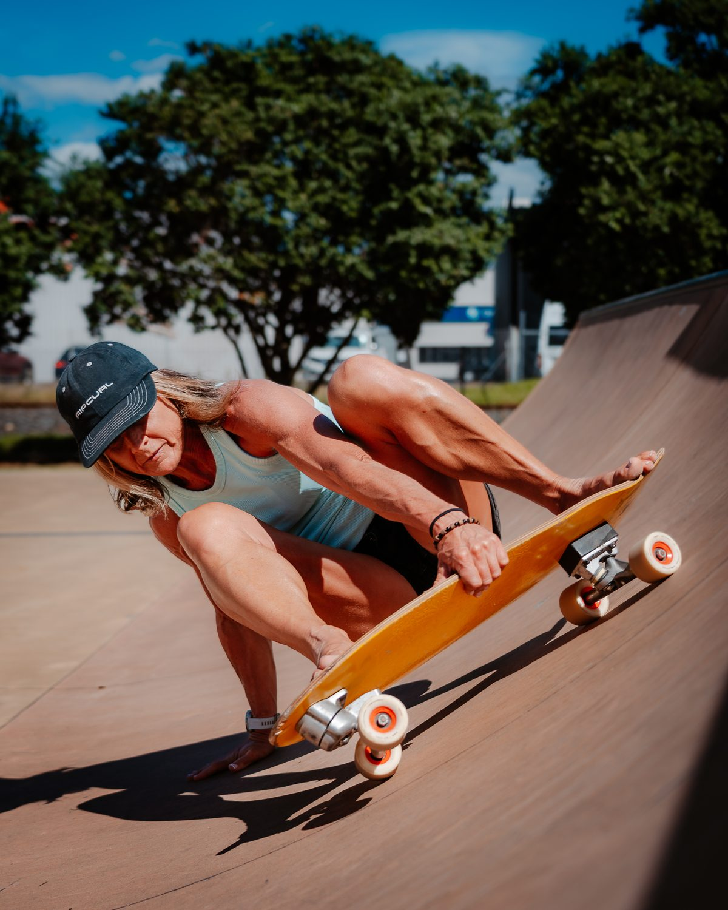
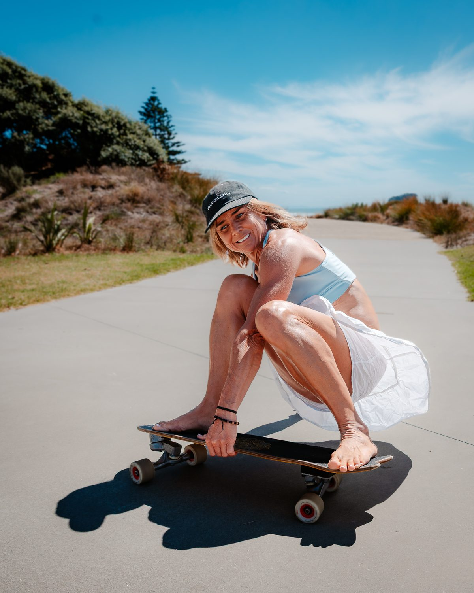
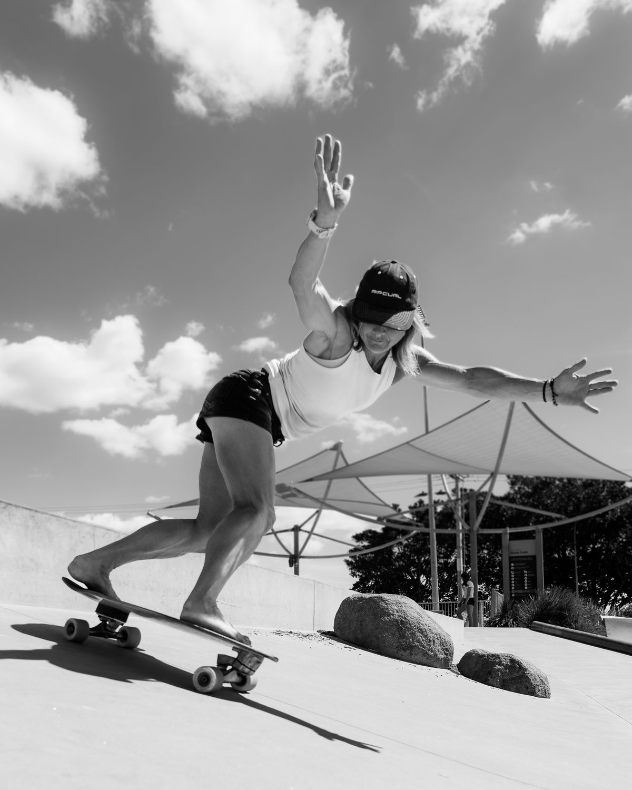
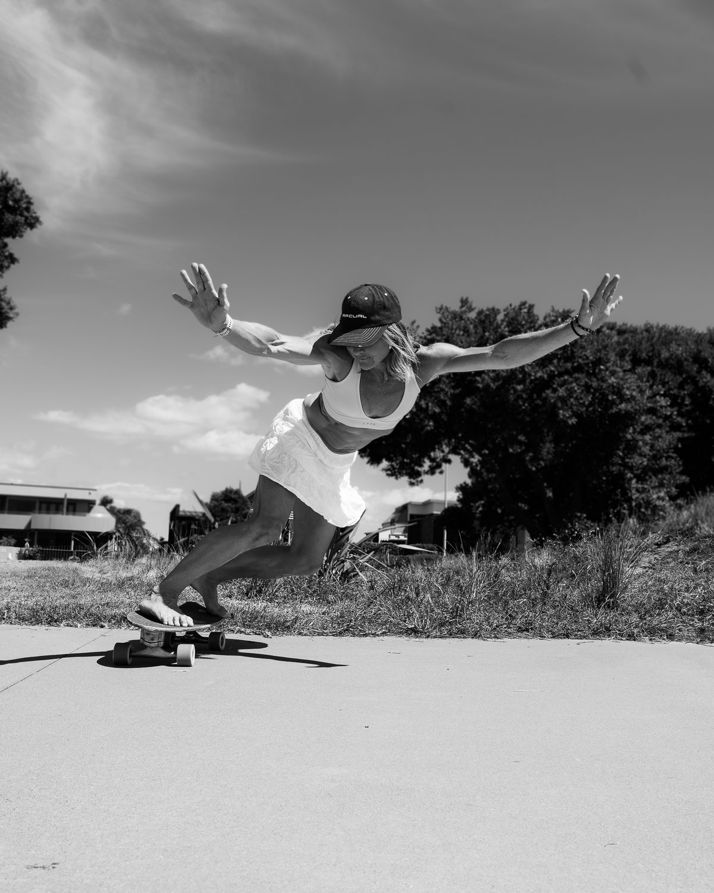
SCENE
Ongoing seriesA portrait series for the people who make local sport happen and rarely get the spotlight: the coaches, the volunteers, the regulars who show up every single session.
First up was JoJo from Alliance Athletics. Know someone who deserves to be seen? Send them my way.

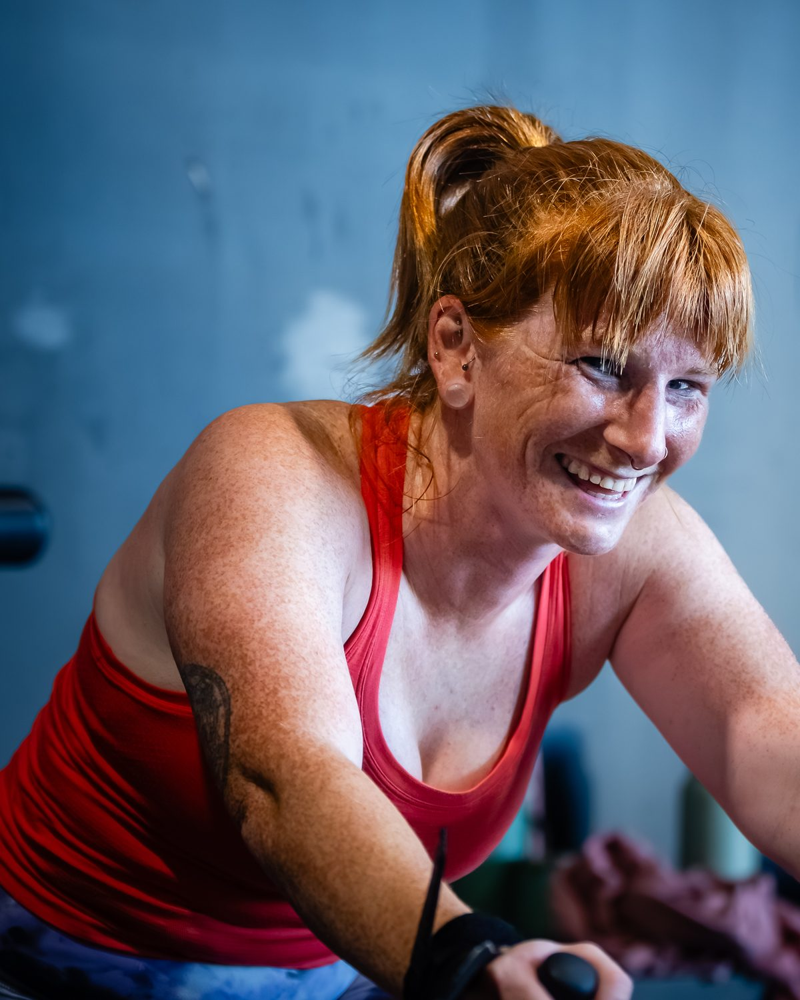
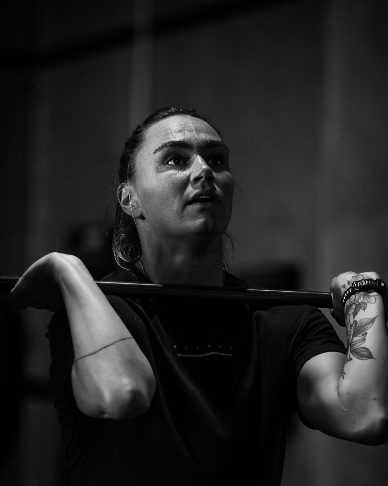
Where I'm heading
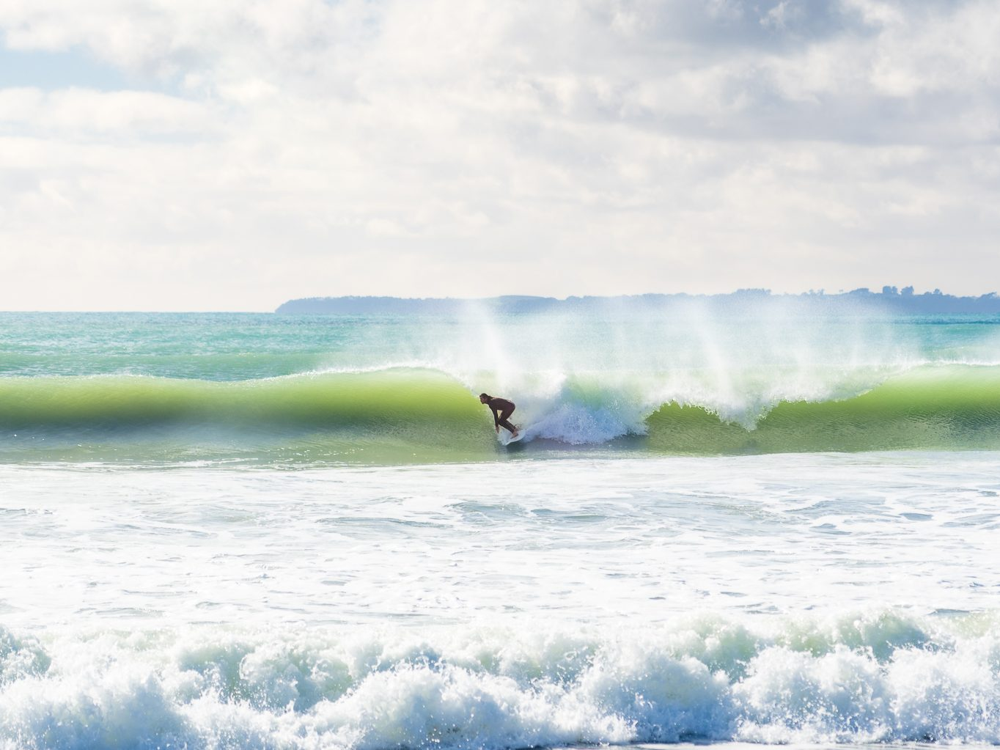
Surf
Bay of Plenty breaks at first light, from the water and from the air.
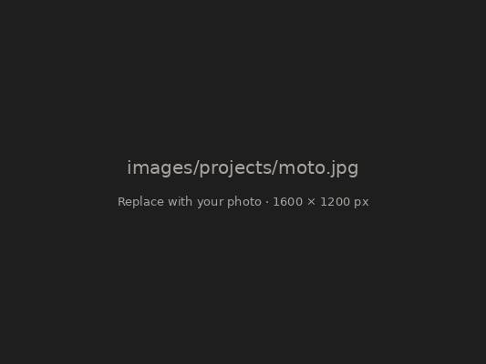
Moto
Dirt, roost and riders who live for the next jump.
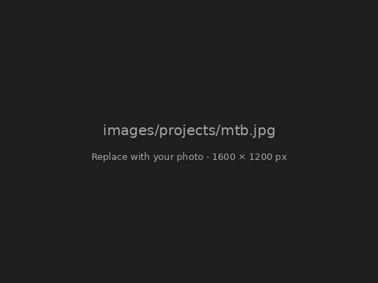
Mountain biking
Rotorua's trails, from local shredders to the big race weekends.
Got a story worth telling?
Brands, athletes and publications: if you need images and film that feel real, let's build something together.
Photo, film & drone
One person, one consistent look across every format.
Anywhere in Aotearoa
Based in Papamoa, happy to pack the car or catch a flight.
Usage, sorted
Licensing agreed up front for each project, so you know exactly where the work can go.
Media kit
Reach, audience and recent work in one tidy PDF, sent on request.